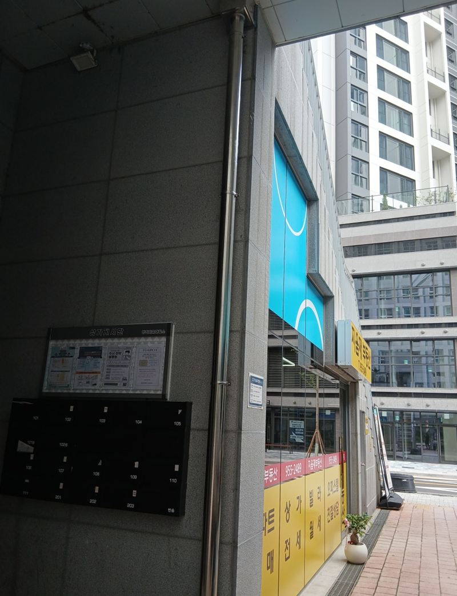
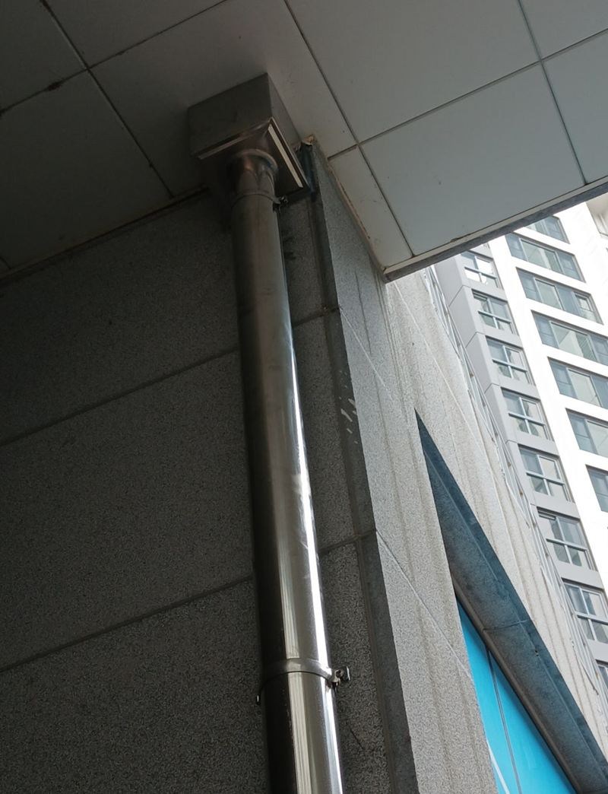
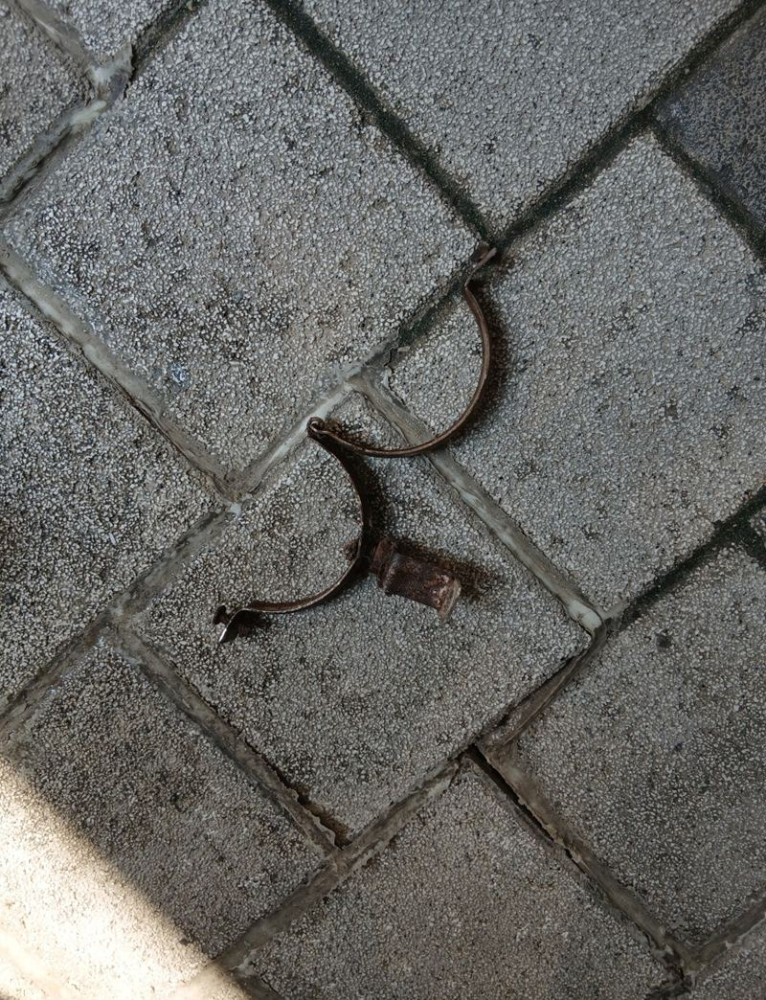
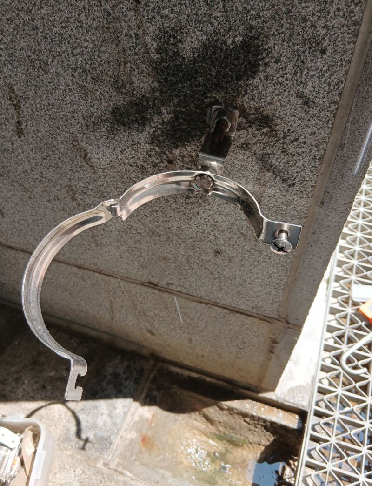
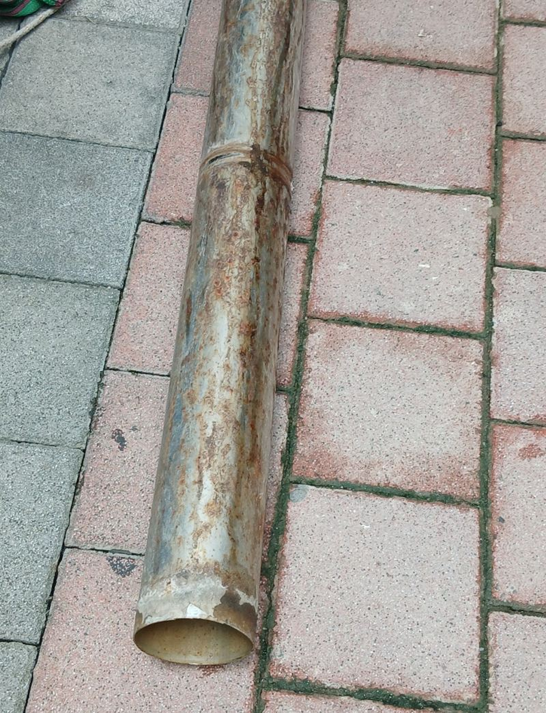
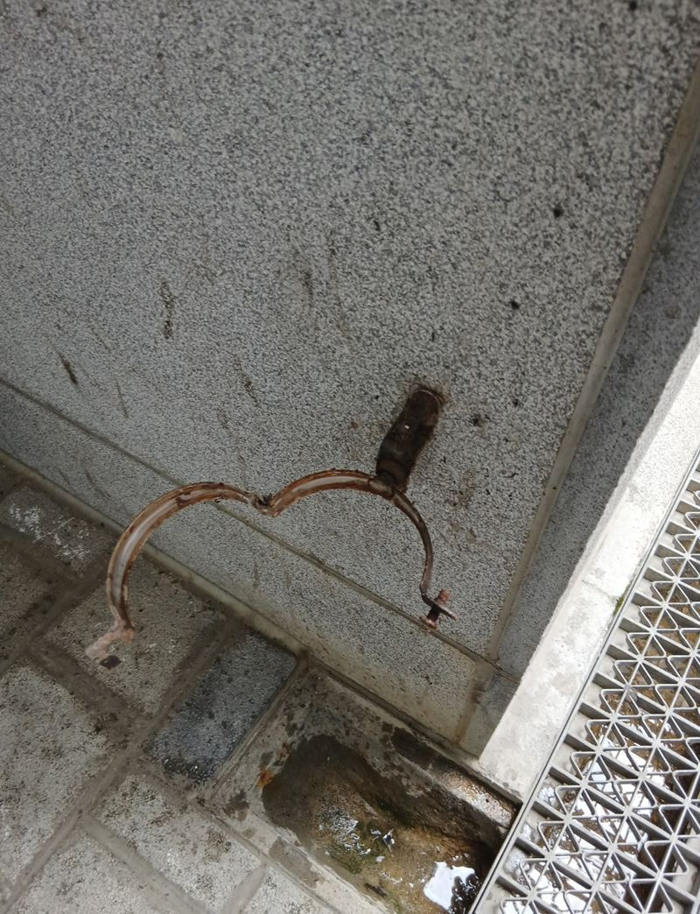
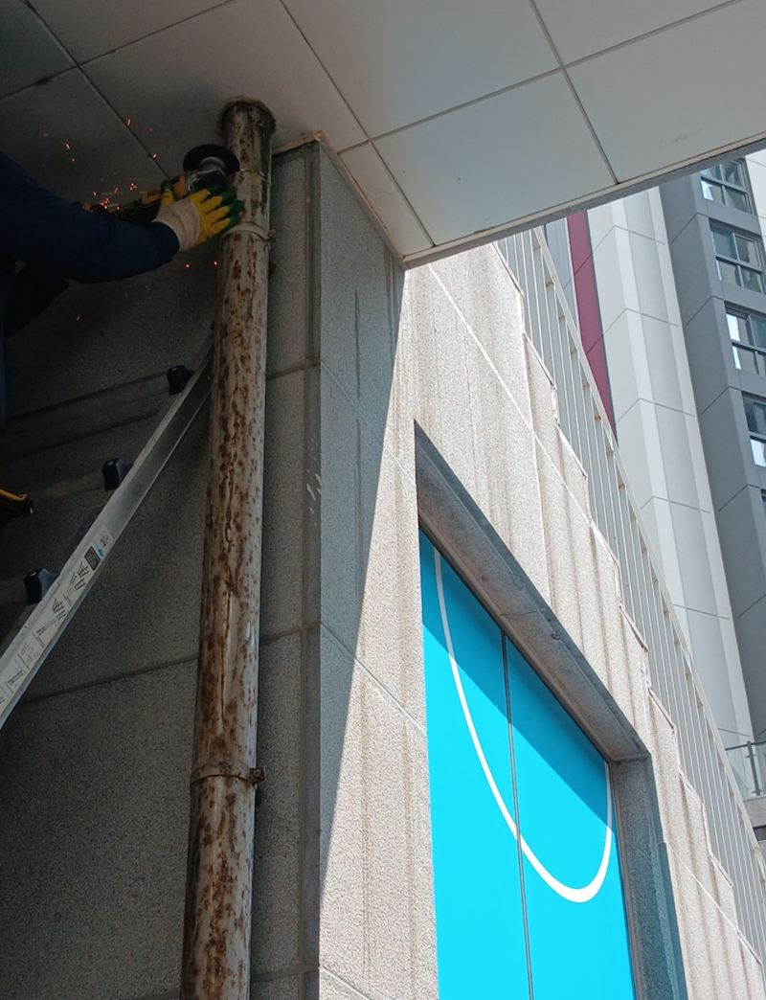

도봉 우수관 부식·녹 발생 시 교체해야 하는 이유


교체 전교체 후← 밀어서 전후 비교 →
"우수관에 녹이 심하고 물도 조금씩 새는 것 같아요." 빌라 외벽을 따라 내려오는 우수관이 겉에서 봐도 붉게 녹이 번져 있었어요. 관을 벽에 붙잡아 주는 지지대(반도)까지 녹이 슬어 흔들리고 있었고요. 관만 바꾸면 다시 흔들릴 상태라, 반도까지 함께 새것으로 교체했어요.
| 현장 | 서울 도봉 방학동 빌라 외벽 |
|---|---|
| 상태 | 우수관 표면 녹, 이음부 누수, 반도(지지대) 부식 |
| 한 일 | 커팅 철거 → 같은 길이 재단 → 신품 설치 → 녹 방지 반도 교체 → 실리콘 마감 |
| 안전 | 철거 중 녹 조각이 떨어질 수 있어 보호 장비 착용 |
녹슨 우수관을 그대로 두면
우수관은 비와 눈, 습기를 1년 내내 맞아요. 방청 처리가 약한 재질은 겉부터 산화가 진행되고, 녹이 번진 자리로 물이 새기 시작해요. 새는 물은 관 안이 아니라 외벽을 타고 흘러내려서 벽을 더럽히고, 오래 두면 벽 틈으로 스며 누수와 곰팡이로 이어져요.


커팅으로 조심스럽게 철거
녹슨 관은 잡아당기면 부서지면서 파편이 튀어요. 구간을 나눠 잘라 내며 떼어 냈고, 남은 벽체와 주변 구조물이 상하지 않게 했어요. 반도도 녹이 깊어 함께 철거했어요.


새 관은 흐름과 고정이 핵심
새 관은 기존과 같은 길이로 재단해 이어 붙였어요. 이때 물 흐름을 생각해 기울기를 잡아야 해요. 기울기가 틀리면 물이 고여 역류하거나 이음부로 넘쳐 다시 벽을 타고 흘러요. 녹 방지 코팅이 된 새 반도로 일정 간격마다 단단히 잡아 흔들림이 없게 하고, 벽과 만나는 틈은 실리콘으로 막았어요.


우수관 교체가 필요한 신호
- 관 표면에 붉은 녹이 번졌어요겉에 보일 정도면 안쪽은 더 얇아져 있어요.
- 비 올 때 이음부에서 물이 흘러요녹으로 이음부가 벌어졌거나 실리콘이 떨어졌어요.
- 외벽에 녹물 자국이 길게 생겼어요관에서 샌 물이 벽을 타고 흐른 흔적이에요.
- 관이 바람에 흔들려요반도가 녹슬어 고정력이 약해진 거예요.
우수관, 이렇게 관리하면 오래가요
- 가을에 낙엽 한 번 치우기윗부분이 막히면 물이 넘쳐 이음부에 녹이 빨리 생겨요.
- 녹 초기엔 방청 도장점처럼 번질 때 칠해 두면 교체 시기를 늦출 수 있어요.
- 흔들림 확인바람에 관이 흔들리면 지지대를 먼저 손보세요.
우수관 교체 질문
녹 슨 부분만 칠하면 안 되나요?
표면 녹 초기라면 방청 도장도 방법이에요. 이미 물이 샌다면 관이 얇아진 상태라 교체가 나아요.
스테인리스로 바꾸면 더 오래가나요?
녹에 강해 바깥 배관에 많이 써요. 비용과 함께 비교해 골라요.
높은 곳 우수관은 어떻게 작업해요?
높이와 진입 여건에 따라 사다리, 로프, 장비 중에서 골라요. 건물 전체 사진을 보내 주세요.
일부 구간만 교체할 수 있나요?
상한 구간만 잘라 바꾸는 것도 가능해요. 이음부가 늘어나니 마감에 더 신경 써요.
빗물받이(위쪽 집수구)도 같이 봐 주나요?
위쪽이 막혀 넘치는 경우도 많아서 함께 확인해요.
공사 중 비가 오면요?
철거한 동안 빗물이 그대로 떨어지니 맑은 날로 일정을 잡아요.
교체 후 벽에 남은 녹물 자국은요?
외벽 청소는 범위를 보고 따로 상의해요.
반도만 따로 교체할 수 있나요?
관이 멀쩡하면 녹슨 지지대만 바꾸는 것도 가능해요.
PVC 우수관도 교체하나요?
재질과 상관없이 교체해요. 햇빛에 삭은 PVC 관도 많이 바꿔요.
우수관에서 새는 물이 1층 창문으로 튀어요
이음부 누수나 관 끝 처리가 잘못된 경우가 많아요. 교체하면서 물이 떨어지는 방향까지 정리해요.
교체 작업 중 집에 있어야 하나요?
외벽 작업이라 꼭 계시지 않아도 되지만, 시작과 마무리 때 확인해 주시면 좋아요.
다른 렉산·우수관 현장
우수관 전체 길이가 보이는 사진과 녹슨 부분을 가까이 찍어 보내 주세요.
전화 상담 010-4517-9872